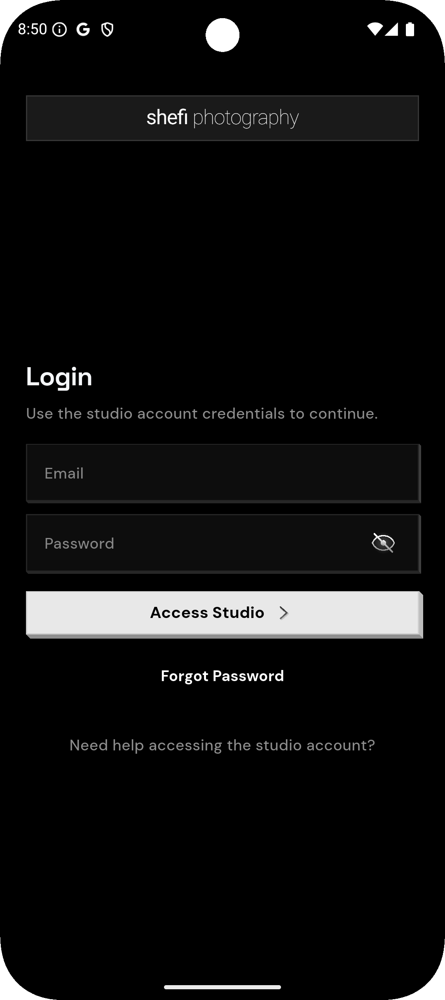
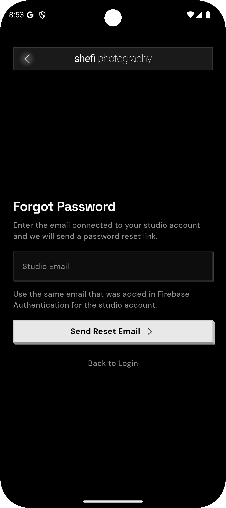
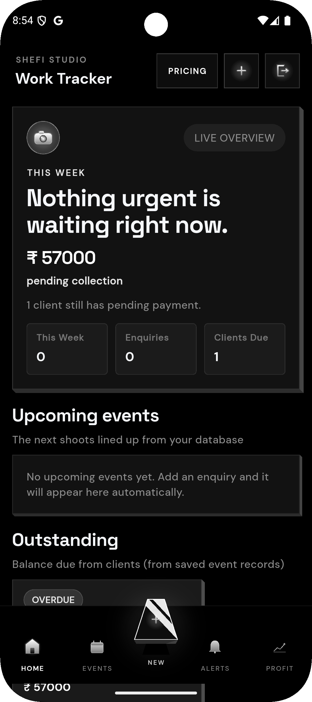
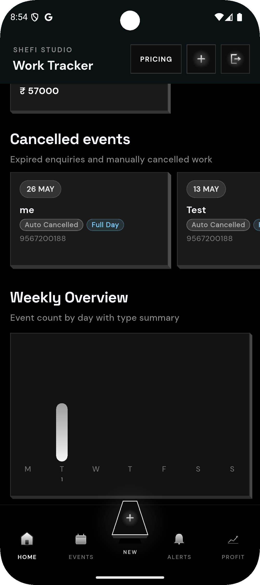
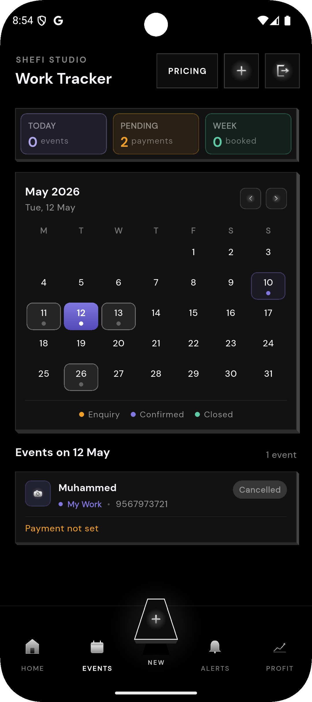
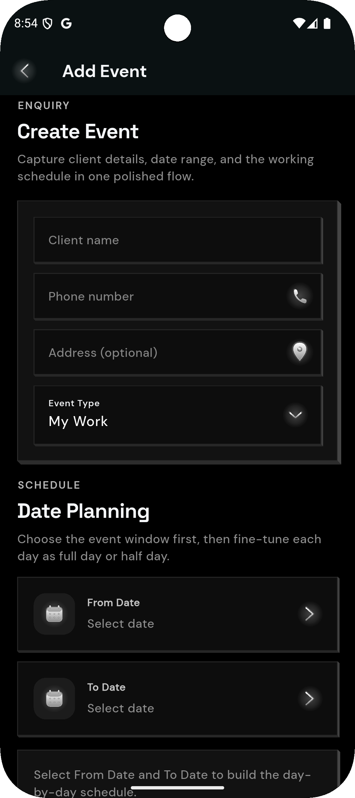
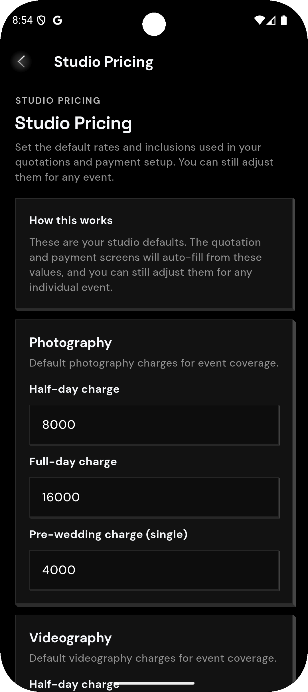
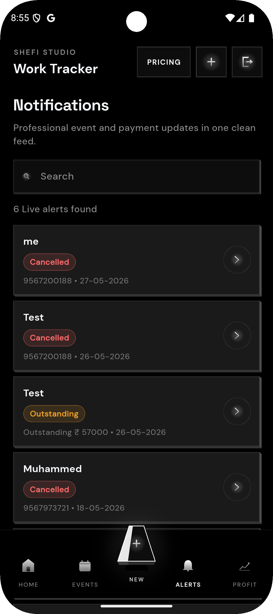
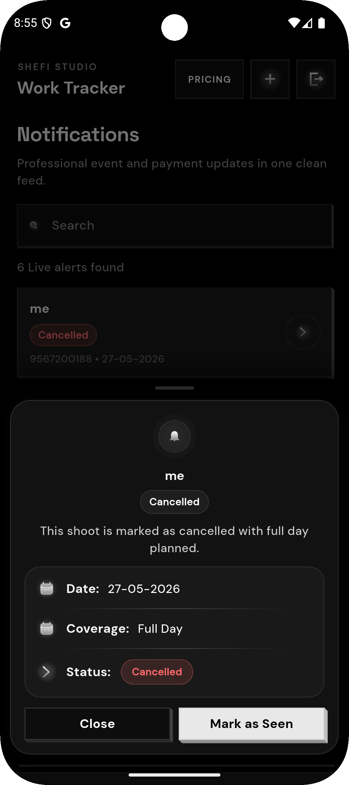
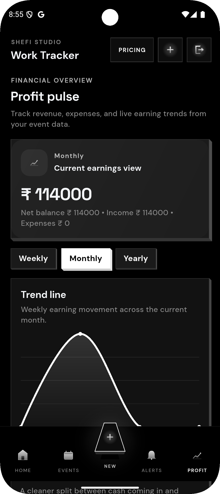

Personal Project · Photography Work Tracker
A NeoPop-inspired work tracker built for a photographer friend
My friend is a photographer, so I built Photography Work Tracker to reduce the time spent managing enquiries, event dates, pricing, pending payments, alerts, and profit visibility. The creative black-and-white NeoPop direction was intentional: photography is a creative business, so the tool needed to feel sharp, focused, and motivating.
Product Story
Turning repeated studio admin into a focused mobile workflow
Enquiry and date planning
Created flows for adding client enquiries, selecting event windows, and planning full-day or half-day work.
Pending collections
Designed the app to surface outstanding payments so the photographer can follow up without manually checking scattered notes.
Profit pulse
Added visibility around earnings, expenses, and trends so the studio owner can understand the business side quickly.
Screens
Real screenshots showing the dark creative system, calendar, alerts, pricing, and profit views










This is a personal project, so the case study is not written like a company case. The value is the product thinking: understanding a friend's real workflow, removing repeated admin effort, and shaping a visual system that matches the energy of a creative photography business.
FlutterNeoPop-inspired UICalendar workflowPricing setupPayment follow-upProfit tracking
Contact
Ready to discuss senior Flutter, mobile architecture, or product engineering roles
Email: muhmmdshabeer@gmail.com · Phone: +91 95672 00188